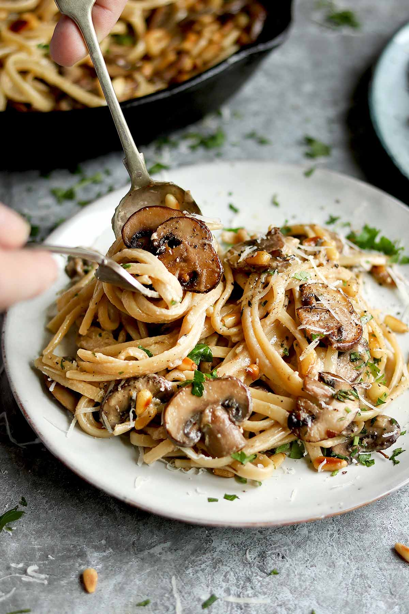

How to make Mushroom Pasta

Recipe description
In this recipe you'll learn how to make a creamy mushroom pasta. The dish is typically made with a flat pasta such as liguine or parpadelle, but you can use whatever pasta you have.
Ingredients
Serves 3
- 500g chestnut mushrooms, brushed clean
- 350g dried linguine
- 250ml full-fat dairy cream
- 15g butter
- 1/2 large onion
- 6 cloves of garlic
- 2 tbsp olive oil
- Basil (torn) to serve
- Finely grated parmigiano reggiano
Steps
- Fill a pasta pot with water and begin to heat.
- Chop the garlic and onion into small pieces. Slice the mushrooms into 4-5mm pieces.
- Heat a stainless steel pan over a medium flame. Add oil when hot and throw in the onion.`
- After 3-4 minutes, just as the onion edges begin to turn brown, add the garlic. Fry until fragrant.
- Add the mushrooms and a pinch of salt. Cook until golden and slightly crispy.
- Lower the steel pan heat down to the lowest setting. Add salt to the boiling pot and, setting a timer for 9 minutes, add the pasta.
- Add a knob of butter to the pan, stir the mushrooms, and add the cream to the pan. Give a generous grind of pepper.
- Cook until reduced to a thick, creamy sauce. Turn the heat off and incorporate half the parmesan.
- Once the timer goes off, use a small mug to scoop some pasta water and drain off the rest.
- Add the pasta and 50ml of pasta water to the cream sauce, stirring. If the mixture is too thick, add splashes of pasta water until it reaches the desired consistency.
- Transfer forks of pasta to warmed plates by twisting a wooden fork and moving over with a metal spoon.
- Finish the dish with the rest of the parmesan and the basil pieces. Give a twist of salt and pepper and enjoy hot!
Home